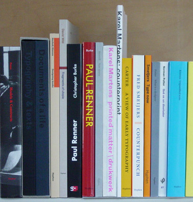

Robin Kinross
Writer and publisher | Hyphen Press
 After graduating (1975) and postgraduating (1979) from the Department of Typography at the University of Reading, he began to do ‘editorial typography’ (editing and design in one process) as well as write about typography. In 1980, while still living in Reading, he published the first book under the imprint of Hyphen Press. In 1982 he moved to London, did behind-the-scenes work for Pluto Press’s political atlases, and began to write journalism, especially for the magazine Blueprint in its golden period of the late 1980s. When his book Modern typography came out in 1992, this signalled the start of Hyphen Press as the full-time occupation that it is now. Impatient with authors slow to complete promised works, he resorted to publishing his own words again in the books Unjustified texts (2002) and The transformer (2009).
After graduating (1975) and postgraduating (1979) from the Department of Typography at the University of Reading, he began to do ‘editorial typography’ (editing and design in one process) as well as write about typography. In 1980, while still living in Reading, he published the first book under the imprint of Hyphen Press. In 1982 he moved to London, did behind-the-scenes work for Pluto Press’s political atlases, and began to write journalism, especially for the magazine Blueprint in its golden period of the late 1980s. When his book Modern typography came out in 1992, this signalled the start of Hyphen Press as the full-time occupation that it is now. Impatient with authors slow to complete promised works, he resorted to publishing his own words again in the books Unjustified texts (2002) and The transformer (2009).
Work
Hyphen Press publishes books on typography and design more generally. The imprint was begun in 1980 in order to publish a new edition of Norman Potter’s What is a designer. This is a questioning, wide-ranging, but also down-to-earth book – and these are the qualities that characterize much of the Hyphen Press list. It is a small but growing set of books with an international reputation. The books find their way into the specialist design bookshops all over the world.

Hyphen is essentially one person – editor/publisher Robin Kinross. He works in collaboration with an informal network of kindred spirits. Each book is made by its own appropriate group of people. Writing, editing, design, and production-management are done by these people, with the roles shared or blurred. (Design as an add-on is not the idea; we run a mile from the ‘creative’.) Among Hyphen authors who have acted also as designers of their own books are Jost Hochuli, Christopher Burke, Christopher Wilson, and Karel Martens. Several books have used typefaces designed by Fred Smeijers – another Hyphen author – often in pre-release versions. The books are usually produced in the Netherlands or Belgium, often under the supervision of Françoise Berserik, a book designer (also lettercutter and accordion player) with a strong editorial interest and no computer. She works in The Hague. There are also informal connections and collaborations with the Department of Typography at the University of Reading. Although a small and inevitably specialist operation, Hyphen Press tries for a certain anonymity and generality in what it does: the books could just as well be produced in hundreds of thousands of copies.
In these ways we try to embody the ideas and beliefs that Norman Potter wrote about in What is a designer: real material production (not just theory), critical thinking (not academic labour), the self-managing small group.